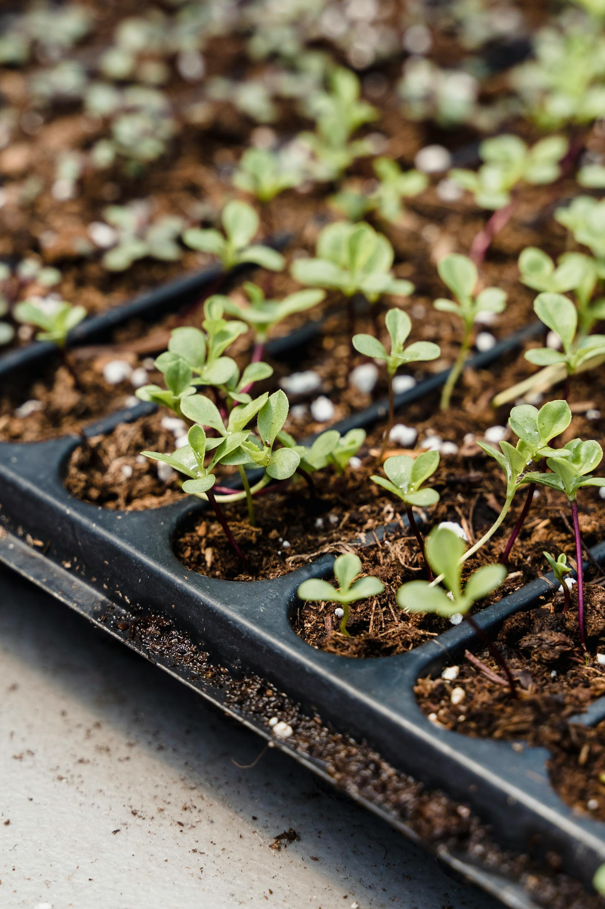

horTitech es un sistema avanzado de software diseñado para la gestión remota de dispositivos de iluminación y riego, orientado a mejorar la eficiencia en el uso de recursos en entornos agrícolas y residenciales. Este software permite a los usuarios controlar y automatizar el encendido y apagado de luces y sistemas de riego desde cualquier lugar, a través de una interfaz intuitiva y fácil de usar. Características Principales: Control Remoto: Los usuarios pueden gestionar sus dispositivos de manera remota utilizando una aplicación móvil o un portal web, brindando comodidad y flexibilidad en la supervisión y operación. Automatización: horTitech permite programar horarios específicos para el encendido y apagado de luces y sistemas de riego, asegurando que los recursos se utilicen de manera óptima y reduciendo el desperdicio. Monitoreo en Tiempo Real: El software proporciona información en tiempo real sobre el estado de los dispositivos, permitiendo a los usuarios tomar decisiones informadas y realizar ajustes según sea necesario. Alertas y Notificaciones: Los usuarios reciben notificaciones sobre eventos relevantes, como el funcionamiento de los dispositivos o la necesidad de mantenimiento, lo que ayuda a prevenir problemas antes de que ocurran. Interfaz Intuitiva: La plataforma cuenta con un diseño amigable, que facilita la navegación y el acceso a las funciones, permitiendo que incluso los usuarios menos técnicos puedan aprovechar todas las capacidades del software. Sostenibilidad: Al optimizar el uso de energía y agua, horTitech contribuye a prácticas más sostenibles, apoyando a los usuarios en su compromiso con el medio ambiente
